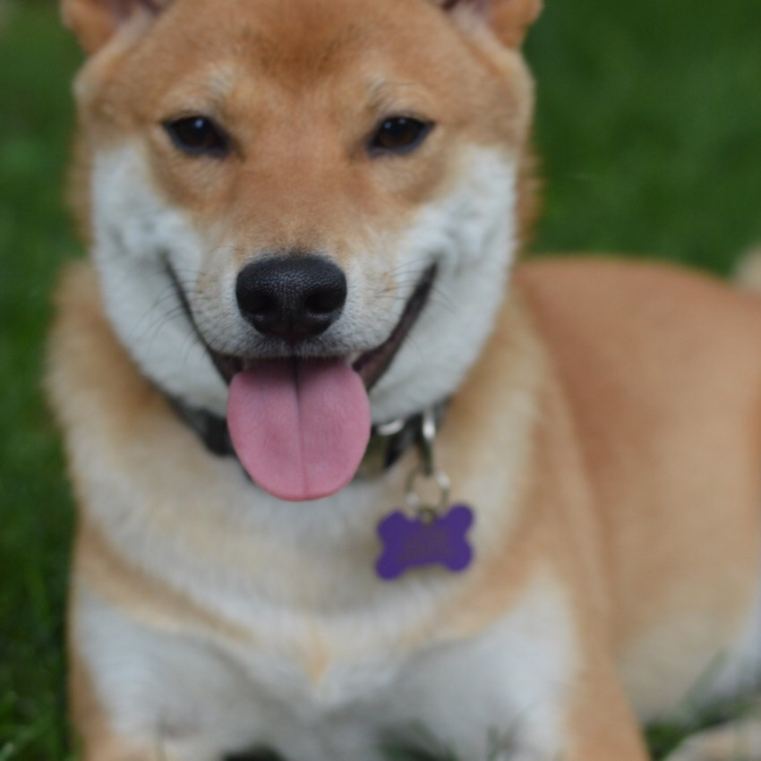

Mocha

Mocha is a very energetic little dog. His favorite activities are tug-of-war with toys, playing fetch with his orange ball, and laying on his dad's lap. He has so much energy that in the evenings he tends to 'get the zoomies' in which he sprints in circles around the house without any stimulation.
When Mocha is done playing, he loves to lay down in an especially silly way. He lays on his belly with his rear paws pointed straight backwards as shown in the following photos. It's his favorite way to recharge after a long day of play.
Photo Gallery

Likes
- Jumping on and off the couch
- Running in circles
- Belly rubs
Biscuit
Biscuit is a 2 year old shiba inu dog. Shiba inus are energetic and playful dogs. Biscuit enjoys running outside in circles and then laying down in the grass in the sun for hours. He also likes going for occasional swims.
As energetic as Biscuit is, he also likes to relax. He loves to sleep in his dog bed and watch Netflix with his owners. His favorite treat is apples.
Photo Gallery
Likes
- Going for walks
- Swimming
- Apples
Milo
Milo is a 6 year old schnoodle. He is super energetic and his favorite game is fetch, which he wants to play all the time — yes, even when it's pitch black outside or the weather is unideal. Milo is also loving and kind, at least to humans. When he's around other dogs, he is either jealous of the attention they're receiving, or ignores them because he has other priorities (chasing a ball).
Milo is also a pretty smart dog, although he doesn't always use it for good. He can roll over on command, and use his sense of scent to find a hidden treat. But he's also figured out some loopholes to get what he wants. For example, he has been trained to nudge the bell near the front door to indicate that he needs to be walked. Recently, though, he's learned that he can just pretend like he wants to go on a walk, but instead lead us around the house to the backyard so he can play. In case it wasn't clear: Milo loves to play. Although he can be sneaky, my family loves him more than anything.
Photo Gallery
Likes
- Playing fetch
- Table scraps
- Belly rubs
Lucy

Lucy is a 17-year-old calico that I've had since I was 5, she has pretty much grown up with me my whole life. Even though she's old she's still kickin' it and enjoys running around the house at 4am.
Her favorite foods include anything but her kibble. She enjoys sunbathing and long naps, along with lots of petting. However, she hates getting her stomach rubbed.
Photo Gallery


Likes
- Sleeping
- Food
- Her bed
Bacon Q Dog

Bacon Q. Dog is a 9yr old labradoodle. He prefers to spend his days lounging among the three different beds/couches that his family has gifted him. He enjoys a walk or two around the neighborhood, as long as he can pretend that he doesn't see any of the other animals to avoid the embarrassment of not wanting to admit he has no wolf-like skills in chasing them.
At night just as the rest of the family is ready to relax, Bacon suddenly wants to release all of his energy. He will place his toys on a mini couch and frantically drag the couch around, giving his toys "a ride." There is also a lot of rolling. Lots and lots of rolling.
Photo Gallery


Likes
- Belly rubs
- Playing tug-of-war
- Sneaking onto the couch